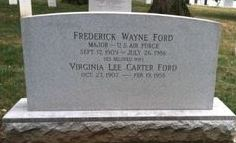

Frederick Wayne Ford
1909–1986
Life events
| Born | 17 Sep 1909 · Huntington, West Virginia Map  |
|---|---|
| Lived | 1910 · Bluefield, West Virginia Map |
| Lived | 1920 · House #32, Guthrie, West Virginia Map  |
| Lived | 1930 · Dunbar, West Virginia Map  |
| Education | 1931 · Morgantown, West Virginia Map · A.B. from WVU |
| Married | 1933 · Tyler, West Virginia Map |
| Education | 1934 · Morgantown, West Virginia Map · Law Degree from WVU |
| Lived | 16 Oct 1940 · Arlington, Virginia Map  |
| Lived | 1950 · Alexandria, Virginia Map · Relation to Head: Head; Married |
| Married | 11 Oct 1959 · Alexandria, Virginia Map |
| Occupation | Mar 1960 · Washington, District of Columbia Map · Appointed as Chairman of the FCC by President Eisenhower |
| Divorced | 26 Aug 1981 · Virginia Map |
| Died | 26 Jul 1986 · Hinsdale, Illinois Map |
| Buried | Arlington, Virginia Map · Arlington Cem., Arlington, Fairfax County, Virginia |
Family


Unknown spouse
Photos
Jemima Elizabeth Ford
Margaret Buchanon Ford
George Michael Ford
Annie Laurie Linn
Frederick Wayne Ford
Annie Laurie Linn Ford
George Michael Ford
Annie Laurie Linn
Frederick Wayne Ford
Annie Laurie Linn Ford
Frederick Wayne Ford
Frederick Wayne Ford
Frederick Wayne Ford
Frederick Wayne Ford

Frederick Wayne Ford

Frederick Wayne Ford